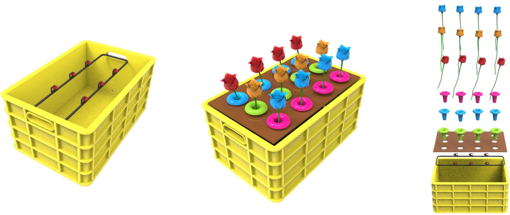
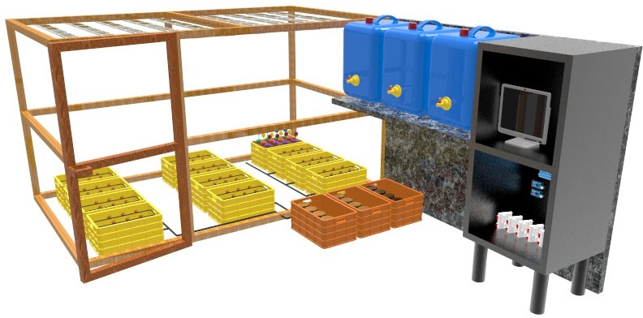
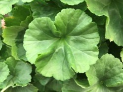
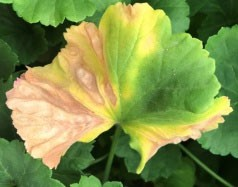
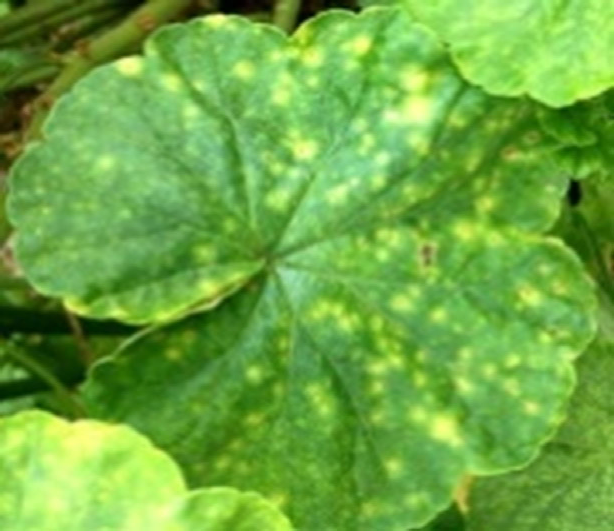
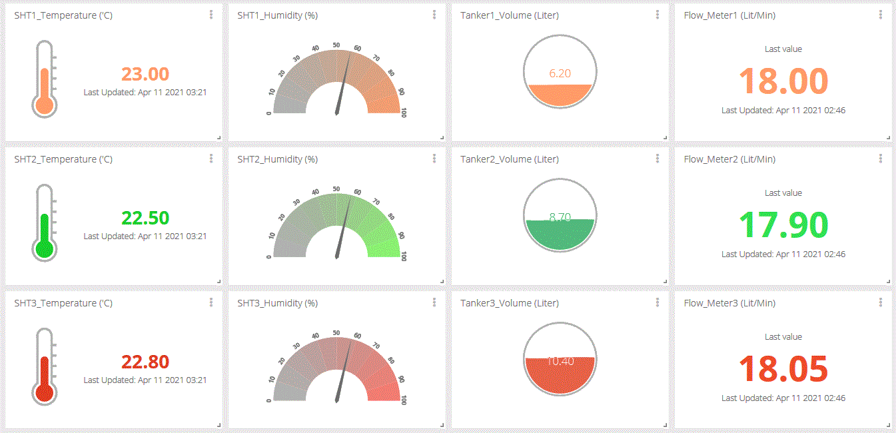
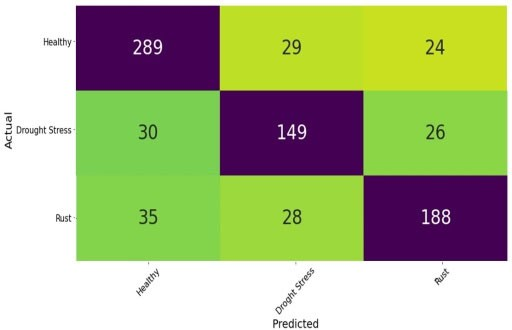
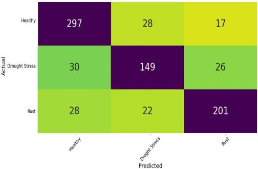
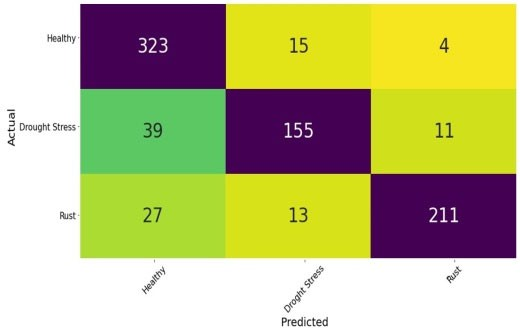
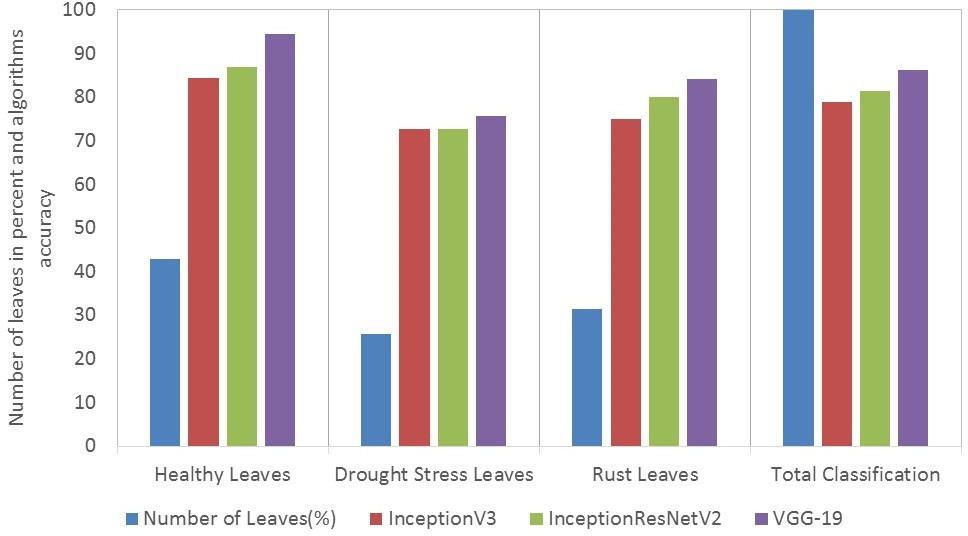

🌱 Aeroponic Smart Experimental Greenhouse: IoT & Deep Learning for Irrigation and Plant Disease Detection
2021 ASABE Annual International Virtual Meeting · Paper 2101252
University of Tehran · Department of Mechanics of Biosystem Engineering
Presented at ASABE 2021
This work was presented online at the 2021 ASABE Annual International Virtual Meeting (July 12–16, 2021). ASABE Paper No. 2101252. doi.org/10.13031/aim.202101252

The Challenge
Controlling environmental conditions and monitoring plant status in greenhouses is critical for timely management decisions and crop production. Aeroponic systems offer high water and nutrient efficiency and independence from soil, but achieving optimal growth depends on instantaneous monitoring of temperature, humidity, light, irrigation, and disease. This project developed and tested a smart aeroponic experimental greenhouse that combines IoT for real-time environmental control and data streaming with deep learning (VGG-19, InceptionResNetV2, InceptionV3) to detect geranium leaf disease and drought stress from RGB images.
Smart Greenhouse Design and Aeroponic System
A 9 m² indoor structure (3×3 m, 2 m high) was built on the University of Tehran campus with black polycarbonate for light control, artificial lighting (8000 lux), electric heating, cellulose cooling, ultrasonic humidifiers, and ventilation. Plants were grown in polymer aeroponic boxes (53×33×28 cm) with centrifugal nozzles supplying nutrient mist to the roots; pumps recirculated the solution to storage tanks with UV disinfection. Figure 1 shows the aeroponic box design and centrifugal irrigation layout; Figure 2 shows the general view of the centrifugal irrigation section.

Figure 1: Aeroponic feeding box based on centrifugal method — schematic and explosive view with plant placement.

Figure 2: General view of the centrifugal irrigation section.
Intelligent Irrigation and IoT Data Collection
Irrigation was scheduled with 10 min on / 5 min off cycles via asynchronous pumps. Sensors (SHT, GY-302, TCS3200, YF-S201, SRF05) measured temperature, humidity, light, water flow, and tank level; data was sent to a central unit and published to the cloud (Ubidots) for remote monitoring. Figure 3 shows the irrigation system components; Figure 4 shows the sensor setup and data flow.
Deep Learning for Disease and Stress Detection
Geranium cuttings were placed in the greenhouse; RGB images were captured at 4-day intervals. A database of 1000 images from five industrial greenhouses was labeled into three classes with expert consultation: healthy, drought stress, and rust (Figure 6). Data augmentation (rotation, zoom, horizontal/vertical flip) increased the set to 5000 images. Three pretrained CNNs—VGG-19, InceptionResNetV2, and InceptionV3—were fine-tuned (75% train, 15% validation, 10% test). VGG-19 achieved the highest accuracy (0.9294 on industrial data). The trained models were then evaluated on 798 images from the experimental greenhouse.



Figure 6: Geranium leaf classes — (A) Healthy, (B) Drought stress, (C) Rust.
Results
The IoT system published temperature, humidity, water flow, and tank volume to Ubidots in real time (Figure 7). On the experimental greenhouse test set, VGG-19 reached 86.34% overall accuracy (94.44% healthy, 75.60% drought stress, 86.34% rust); InceptionResNetV2 reached 81.07% and InceptionV3 78.44%. Figure 8 shows training/validation accuracy for the three networks; Figure 9 shows the confusion matrices on experimental data; Figure 10 summarizes per-class accuracy. VGG-19 consistently outperformed the other two and was best at identifying healthy leaves.

Figure 7: Real-time monitoring via Ubidots — temperature, humidity, water flow, tank volume.
Figure 8: Training and validation accuracy — (A) InceptionV3, (B) InceptionResNetV2, (C) VGG-19.



Figure 9: (A) InceptionV3, (B) InceptionResNetV2, (C) VGG-19 confusion matrices on experimental greenhouse test data.

Figure 10: Per-class leaf share and accuracy of VGG-19, InceptionResNetV2, InceptionV3 in the experimental greenhouse.
Publication and Citation
Narimani, M., Hajiahmad, A., Moghimi, A., Alimardani, R., Rafiee, S., & Mirzabe, A. H. (2021). Developing an aeroponic smart experimental greenhouse for controlling irrigation and plant disease detection using deep learning and IoT. In 2021 ASABE Annual International Virtual Meeting (p. 1). American Society of Agricultural and Biological Engineers.
Paper No. 2101252 · Presented online July 12–16, 2021 · Journal version (ASABE)
Event: 2021 ASABE Annual International Virtual Meeting.
Contact
Mohammadreza Narimani
PhD Candidate, UC Davis